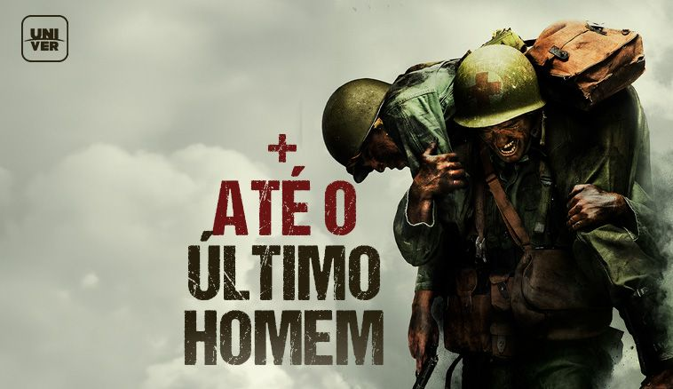

*The Chosen* é uma série cristã criada por Dallas Jenkins, que mostra a vida de Jesus pela perspectiva de seus seguidores. Financiada coletivamente, tornou-se um grande sucesso, alcançando milhões de pessoas em 197 países. Está disponível em plataformas como Amazon Prime Video e Netflix.
The Chosen
👍 1.499.283 Likes

*Até o Último Homem* narra a história real de Desmond Doss, um soldado que, sem usar armas, salva mais de 75 vidas na Segunda Guerra Mundial, provando coragem e fé inabaláveis.
Até o ultimo homem
👍 857.945 Likes